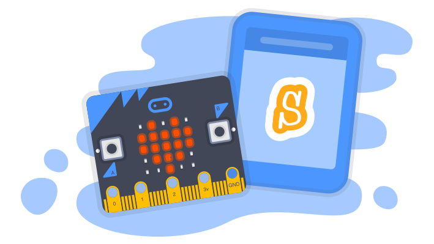

Que bom te ver por aqui, Fulano
O Micro:bit pode ser programado para fazer várias coisas diferentes, como um relógio digital, rastreador de fitness ou um console de jogos.
O Scratch é uma linguagem de programação criada pelo grupo Lifelong Kindergarten da universidade americana MIT.
